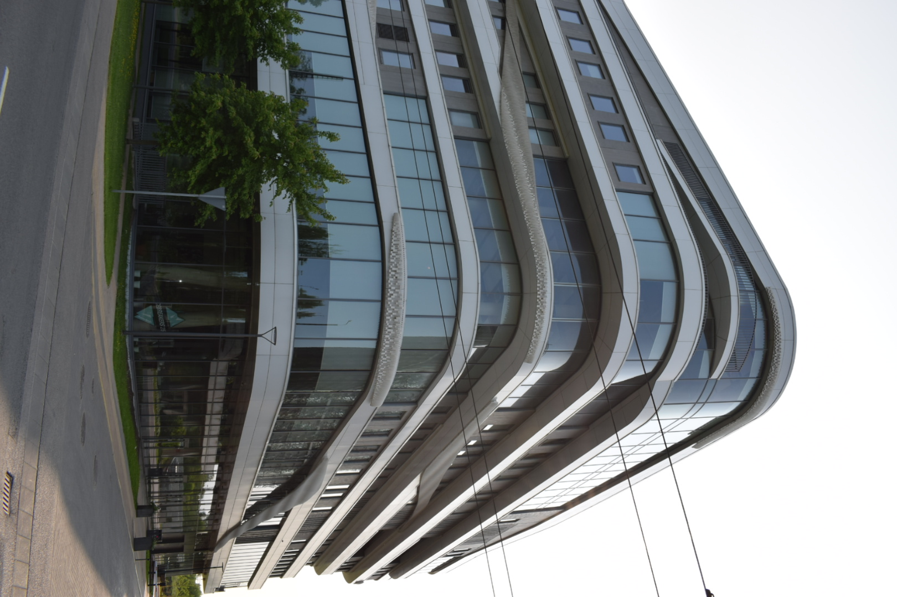

Latvijas Universitātes Zinātņu māja
Zinātņu māja ir viena no jaunākajām ēkām LU Akadēmiskajā centrā. Tā veidota, lai veicinātu starpdisciplināru zinātni un inovāciju. Šeit atrodas laboratorijas, pētniecības centri un jaunuzņēmumu inkubators.
Zinātņu māja ir viena no jaunākajām ēkām LU Akadēmiskajā centrā. Tā veidota, lai veicinātu starpdisciplināru zinātni un inovāciju. Šeit atrodas laboratorijas, pētniecības centri un jaunuzņēmumu inkubators.